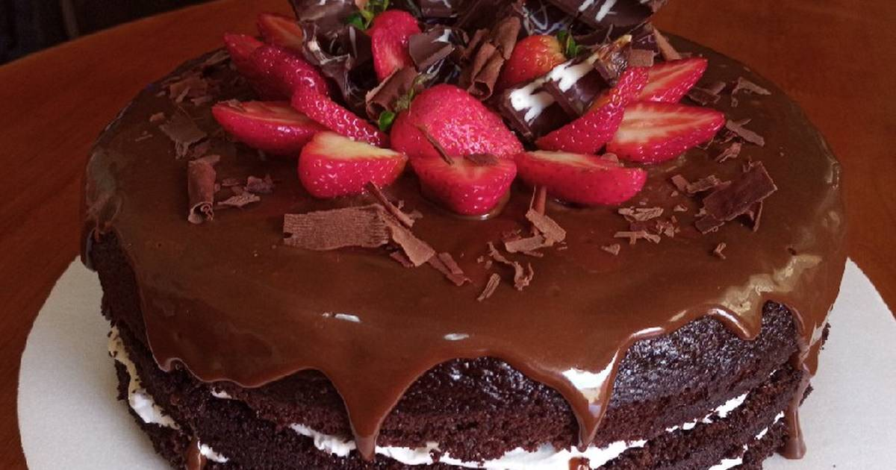

About Me
My name is Fatima, I am a 14 year old girl. Since I was a little girl I liked to make desserts for my family and friends. My dream was always to have my own pastry shop, today I am striving to achieve it, now I continue selling desserts for my acquaintances.
Here some pictures ✨
What is Fatima´s kitchen?
Fatima's Kitchen is a small business that I started with the help of my parents. I have always wanted to have my own pastry shop since I was little. That's why I started this business selling desserts to my family and friends.